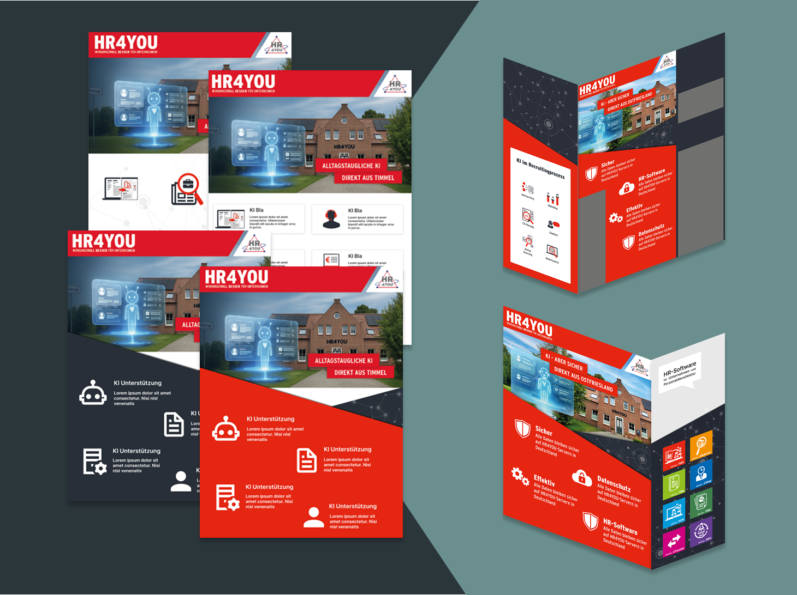

Design-Strategie und Erfolgsfaktor Team
Zusammenarbeit & Lösungsorientiertes Feedback
Design ist Teamarbeit. Ich habe gelernt, den Austausch und das gemeinsame Brainstorming
aktiv zu nutzen, um die bestmöglichen Lösungen zu finden. Mein Fokus liegt auf der schnellen
und lösungsorientierten Umsetzung von Kritik, um Design-Iterationen zügig voranzutreiben.
Ich sehe Feedback als notwendigen Motor für besseres Design.
Corporate Design (CD) Konsequent Anwenden
Beim Erstellen von Mockups für Webdesigns stelle ich sicher, dass das Corporate Design (CD)
von Anfang an konsequent angewendet wird. Durch die Nutzung von Komponenten und der
Zusammenstellung von Grafiken sorge ich für ein stimmiges Gesamtbild, das die Marke klar
repräsentiert.
- Fokus auf CD-Vorgaben bei Farben und Typografie.
- Grafiken und Komponenten für Konsistenz zusammenstellen.
- Mockups erstellen und für die Umsetzung vorbereiten.
KONKRETE PROJEKTE (VISUELLE BELEGE MEINER ARBEIT)

Messestand Display Konzeption
Entwicklung strategischer Display-Entwürfe und Informationsarchitektur..
Fokus auf Markenbotschaft und Cross-Team-Zusammenarbeit.
Details ansehen →
KI-Chatbot: Geführte Klickstrecken-UX
Interface-Design für einen HR-Chatbot mit Fokus auf vereinfachte Prozesse.
Herausforderung: Reduktion komplexer Klickstrecken durch gezielte Action-Buttons.
Details ansehen →
Website Redesign & Markenidentität
Entwurf eines modernen Designs und einer klaren Nutzerführung.
Fokus auf einen Design-Katalog und die vereinfachte Website-Struktur (UX).
Details ansehen →